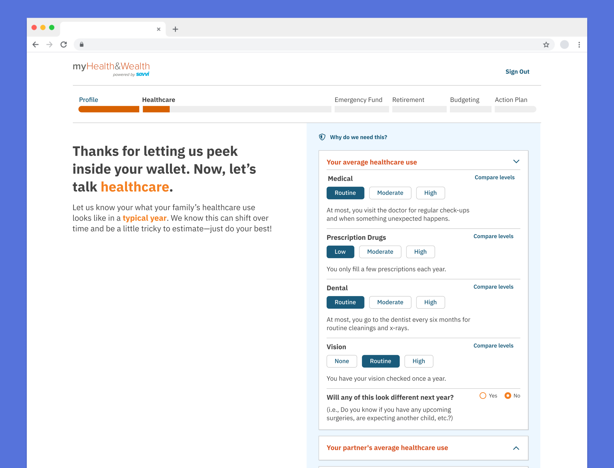

In preparation of launching myHealth&Wealth, a digital tool that employees could use during their open enrollment period to makes decisions about their health insurance benefits and financial savings goals, Voya ran a internal pilot test of an early prototype. A small group of Voya employees were invited and used the tool in the weeks leading up to open enrollment for health care benefits.
User feedback revealed that there were a number of pain points throughout the flow; users had difficult keeping track of their progress, would get confused by screens mid-way through that felt like checkout or results pages and were unsure how to make assessments of their healthcare usage and goals.
A segmented progress tracker let users know they weren’t finished
Progress Tracker (Prototype) - The visual design makes it easy to mistake for navigation and the timeline bar was only tracking the user’s progress through an individual section, not the entire flow and reset when they moved on to the next one.
Progress Tracker (Redesign) - I segmented the timeline based on the steps and expected amount of time each section would take a user, giving them a better understanding of where they were in the flow and how much time left until completion.
Weak calls to action were causing users to inadvertently abandon the tool
The Budget Planning Calculator and Health Care Plan Comparison deviated from the standard template for inputting personal information. As a result, some users mistook these pages for final wrap-up screens and exited prematurely. Adding stronger visual emphasis to the calls to action helped clarify that the experience wasn't complete, encouraging users to engage further and gain more value.
Budget Planning Calculator - Users missed that this section was interactive, as the instructions and slider to adjust spending were not emphasized on screen. Changing the UI to create an obvious calculator metaphor and raising it near the top made it easier to understand and difficult to miss.
Health Care Plan Comparison - Many users fell off the flow at this point, as the only indication that you can continue is an easy to miss “Next” pill button in the bottom right corner (left). Adding a large callout and button explaining the next section (combined with the more descriptive progress bar) decreased user drop-off.
Centering questions around plans and expectations reduced cognitive load
In the prototype, users were asked to think about their current or future healthcare needs in terms of specific treatments (“Might any of these healthcare needs go up in the next year?”), incrementing them on an unclear scale (is it number of treatments? likelihood that they will be necessary?). Thinking on such a granular level can be difficult for even the most experienced health care user and was an easy place for users to become overwhelmed. I rephrased the questions to be more subjective, asking users to think in terms of usage patterns or broader goals (I’d like to start going to therapy, I’d like to look into getting glasses).

Qualitative Rating System - Asking users to rate their current healthcare use on a simple scale with definitions based on usage patterns rather than specific treatments reduced cognitive load and made it easy to get accurate answers. If a user needed even more detail, they could click “Compare Levels” and see specific treatments for each level.
Anticipating Future Needs - The prototype (left) asked employees to think about changes in future healthcare on a granular level, leaving users overwhelmed. Focusing on yes or no questions about broader goals simplified it for users (right).
Results
These changes were incorporated into future tests, resulting in an increased completion rate with users. The final product was launched later that year.